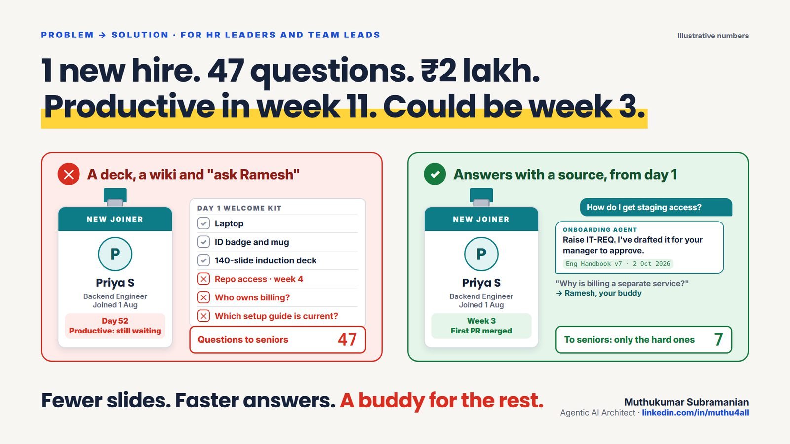
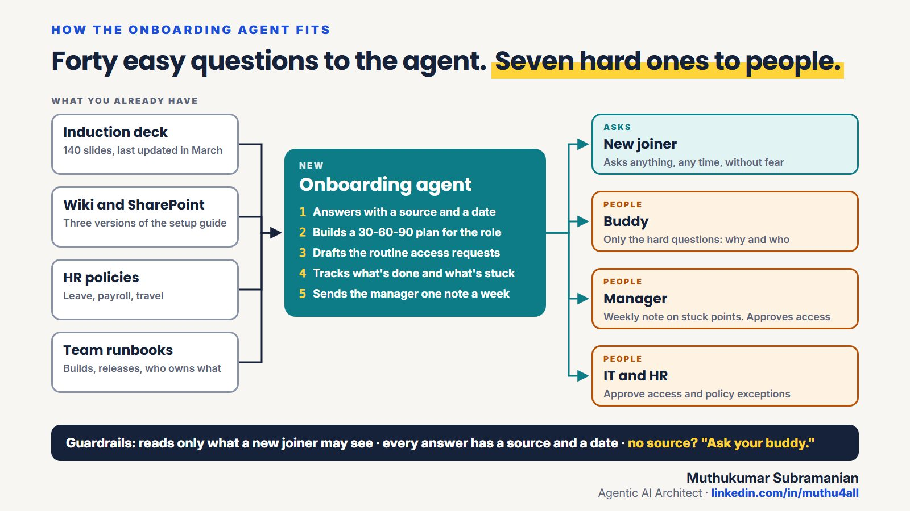
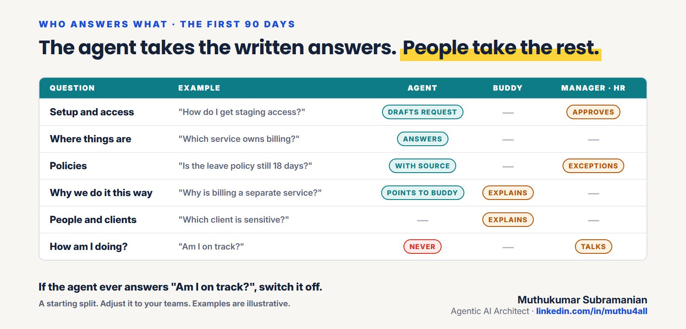

Onboarding One Hire Costs ₹2 Lakh. An AI Agent Can Cut 3 Months to 3 Weeks.
By Muthukumar Subramanian · Agentic AI Architect

Priya joined a Chennai product company on 1 August as a backend engineer. She'd served a 90-day notice period to get there.
Day 1 went well. Laptop, ID badge on a lanyard, a welcome mug, and a 140-slide induction deck. Then the real onboarding started.
The wiki had three versions of the setup guide. The SharePoint folder for her team was last touched in 2023. The answer to most questions lived in a 212-member WhatsApp group, or in one sentence everybody said: "Ask Ramesh."
So she asked Ramesh. Forty-seven times in six weeks. How to get staging access. Which service owns billing. Why the build fails on Fridays. Whether the leave policy in the deck was still the current one.
By week 11, Priya was finally shipping code on her own. Ramesh had lost about six hours a week, and his own sprint had slipped twice. (Priya, Ramesh and the company are a composite, and every number here is illustrative.)
Here's the rough bill. Three months of a ₹9 lakh-a-year engineer working at half speed is a little over ₹1 lakh. Seventy-odd hours of a senior's time is close to another lakh. About ₹2 lakh, for one hire, before anyone writes a line of code that ships. Multiply by every hire this year.
The problem: onboarding is a findability problem
Most companies think they have an onboarding problem and fix it with a better deck, a nicer welcome kit or a longer induction week.
My slightly contrarian view: the induction deck isn't onboarding. It's an alibi. It proves HR "covered it". It doesn't answer the question a new joiner has at 4.30 PM on day 12, when the build is broken and Ramesh is in a client call.
Gallup has been saying this for years. In its 2021 research, only 12% of US employees said their company does a good job of onboarding, and only 29% of new hires felt fully prepared and supported to excel after it. Gallup also says new employees typically take around 12 months to reach their peak performance. That's US data, but I've rarely heard an Indian team lead argue it's better here.
The knowledge exists. It's just scattered across a wiki, old folders, chat groups and two people's heads. New joiners don't lack intelligence. They lack a place to ask without feeling like a nuisance.

The solution: an onboarding agent with five jobs
Not a chatbot that recites the HR policy. An agent that does five jobs, each one small:
→ 1. Answer with a source and a date. "Staging access: raise the IT-REQ form, your manager approves. Source: Engineering Handbook v7, updated 2 Oct." If there's no current source, it says so and points to the buddy. It never guesses.
→ 2. Give a plan for this role. A 30-60-90 plan for a backend engineer looks nothing like one for a sales hire. The agent builds it from the team's own checklist, not a generic template.
→ 3. Clear the routine blockers. Laptop, VPN, repository access, payroll forms. The agent drafts the request and tracks it. A person still approves anything that grants access.
→ 4. Track progress. What's done, what's stuck, what's overdue. Visible to the new joiner first.
→ 5. Tell the manager where the joiner is stuck. One short note a week: "Priya has asked about the billing service four times. Nobody has explained it." That's a coaching moment, not a performance score.
The test for every answer is the one I used for Track A Day 16, "Your AI Agent Read the 2022 Price List. It Cost You ₹6 Lakh.": an answer without a date is a rumour. A new joiner can't tell a 2023 process from a 2026 one. The agent has to.
👉 [GIF: B-day16-4-in-article-week-3.gif]
Caption: Two first quarters. Without the agent, questions pile up on one senior and the joiner crawls to productive by week 11. With it, the routine questions are answered with sources and only the hard ones reach the buddy. All figures illustrative.
The buddy doesn't go away. The buddy gets better questions.
This is the part I'd fight for in any rollout. The agent should take the forty questions that have a written answer, so the buddy can spend time on the seven that don't: why the team chose this design, which client is sensitive, who to talk to before touching the payments code.
A good agent even pushes the human contact. "You haven't met the product owner yet. Want me to find 20 minutes on her calendar?"

Who builds it, and who owns it
Someone has to sit with HR, two team leads and three people who joined in the last six months, and collect the 200 questions new joiners actually ask. That's the job of a forward deployed engineer (FDE): an engineer who works inside the customer's team and ships on their real systems. They'll find the setup guide that's wrong, the policy page nobody updated, and the one folder that holds salary data and must never be indexed.
After go-live, someone in HR owns the agent's behaviour: what it may answer, which documents it reads, how often it nudges, what it must never say. Some companies are starting to call that person an AI Agent Manager. The title is still settling. In a 200-person company, it's probably the HR business partner who already runs onboarding, with a few hours a week.
The hard parts
→ Permissions. Point an agent at the whole SharePoint and a new joiner may get the salary sheet in an answer. Index only what a new joiner is allowed to see, and test it with awkward questions before launch.
→ Stale documents. If the wiki is wrong, the agent is confidently wrong at scale. Every source needs an owner and a review date. The first month will expose how much of your documentation is fiction.
→ What was never written down. In many Indian SMEs, the real process lives in people's heads. The agent can't answer that. Use it to capture what buddies explain, so each answer is written down once, with an owner.
→ Tracking can feel like surveillance. "Priya asked 47 questions" should never appear in an appraisal. Show stuck points to help, not to judge.
→ Lonely onboarding. A new joiner who only talks to an agent never builds the relationships that keep people in a job. Keep the buddy, keep the team lunch.
The opportunity
→ For HR leaders: count the questions your last ten joiners asked seniors in their first month. Most of them have a written answer somewhere. That's your business case.
→ For team leads: write down the ten things you explain to every new joiner. That's the agent's first knowledge base, and your first hour back.
→ For IT services firms and HR tech startups: "onboarding agent in 30 days" is a clean, fixed-scope project: clean the sources, set the permissions, build the role plans, train the buddies.
→ For founders: onboarding agents that work in Tamil, Hindi and English, inside WhatsApp and the HRMS Indian companies already use, are a gap the global tools only half fill.
Indian companies wait 60 to 90 days for a new hire to serve notice. Then we spend another 90 days helping them find the setup guide. One of those waits, at least, we can fix.
Your turn 👇
For a new joiner's first month, who should answer first: the AI agent or the buddy? Pick one.
Tag the "Ramesh" in your team who answers every new joiner's questions.